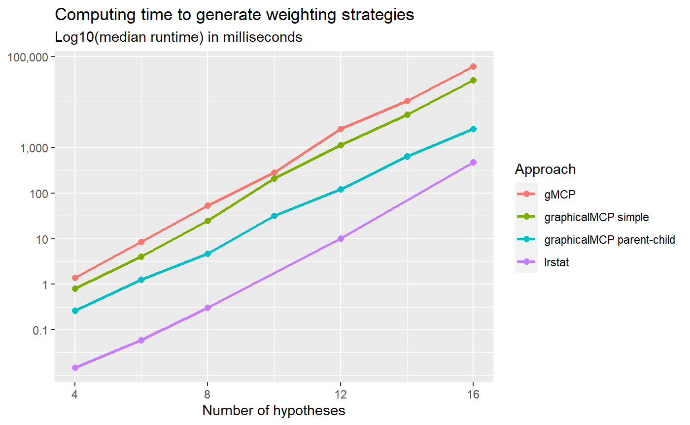

Rationales to generate the closure and the weighting strategy of a graph
Source:vignettes/generate-closure.Rmd
generate-closure.Rmd#>
#> Attaching package: 'gMCP'
#> The following object is masked from 'package:graphicalMCP':
#>
#> fallbackMotivating example
Consider a simple successive graph with four hypotheses. It has two primary hypotheses \(H_1\) and \(H_2\) and two secondary hypotheses \(H_3\) and \(H_4\). Initially, hypothesis weights are split equally between \(H_1\) and \(H_2\) with 0.5. Hypotheses \(H_3\) and \(H_4\) receive 0 hypothesis weights because \(H_3 (H_4)\) is tested only if \(H_1 (H_2)\) is rejected. Thus there is an edge from \(H_1 (H_2)\) to \(H_3 (H_4)\) with a transition weight of 1. When both \(H_1\) and \(H_3\) are rejected, their hypothesis weights are propagated to \(H_2\); similarly, when both \(H_2\) and \(H_4\) are rejected, their hypothesis weights are propagated to \(H_1\). Thus there is an edge from \(H_3 (H_4)\) to \(H_2 (H_1)\) with a transition weight of 1. A graphical multiple comparison procedure is illustrated below.

Generating the closure
The closure of this multiple comparison procedure is a collection of
intersection hypotheses \(H_1\cap H_2\cap
H_3\cap H_4\), \(H_1\cap H_2\cap
H_3\), \(H_1\cap H_2\cap H_4\),
\(H_1\cap H_3\cap H_4\), \(H_2\cap H_3\cap H_4\ \ldots, H_1, H_2,
H_3\), and \(H_4\). In other
words, these intersection hypotheses consist of intersections based on
all non-empty subsets of \(\{1, 2, 3,
4\}\), e.g., \(\{1, 2, 3\}\),
\(\{1, 2, 4\}\), \(\{1, 3, 4\}\), \(\{2, 3, 4\}\), \(\ldots\). Thus there are \(2^4-1\) intersection hypotheses. An
equivalent way to generate all intersection hypotheses is to use a
binary representation. For example, the intersection hypothesis \(H_1\cap H_2\cap H_3\cap H_4\) corresponds
to \((1, 1, 1, 1)\) and \(H_1\cap H_2\cap H_3\) corresponds to \((1, 1, 1, 0)\). Then the closure can be
indexed by the power set of \(\{1, 2, 3,
4\}\) as below. In general, one can use
rev(expand.grid(rep(list(1:0), m))) to general the closure,
where \(m\) is the number of
hypotheses.
#> H1 H2 H3 H4
#> 1 1 1 1 1
#> 2 1 1 1 0
#> 3 1 1 0 1
#> 4 1 1 0 0
#> 5 1 0 1 1
#> 6 1 0 1 0
#> 7 1 0 0 1
#> 8 1 0 0 0
#> 9 0 1 1 1
#> 10 0 1 1 0
#> 11 0 1 0 1
#> 12 0 1 0 0
#> 13 0 0 1 1
#> 14 0 0 1 0
#> 15 0 0 0 1Calculating the weighting strategy
Given the closure, one can calculate the hypothesis weight associated with every hypothesis in every intersection hypothesis using Algorithm 1 of Bretz et al. (2011). The whole collection of hypothesis weights is called a weighting strategy. For example, hypothesis weights are \((0.5, 0.5, 0, 0)\) for the intersection hypothesis \(H_1\cap H_2 \cap H_3\cap H_4\). Then hypothesis weights for the intersection hypothesis \(H_1\cap H_2 \cap H_3\) are \((0.5, 0.5, 0, 0)\), which can be calculated by removing \(H_4\) from the initial graph and applying Algorithm 1 of Bretz et al. (2011). The algorithm calculates hypothesis weights in a step-by-step fashion. For example, for the intersection hypothesis \(H_1\cap H_2\), it can start from \(H_1\cap H_2 \cap H_3\cap H_4\) and calculates hypothesis weights for \(H_1\cap H_2 \cap H_3\) by removing \(H_4\) and then calculates hypothesis weights for \(H_1\cap H_2\) by removing \(H_3\); it can also start from \(H_1\cap H_2 \cap H_3\) (assuming its hypotheses weights are stored) and calculates hypothesis weights for \(H_1\cap H_2\) by removing \(H_3\). Therefore, there are two strategies to calculate the weighting strategy.
#> H1 H2 H3 H4
#> 1 0.50 0.50 0.00 0.00
#> 2 0.50 0.50 0.00 0.00
#> 3 0.50 0.50 0.00 0.00
#> 4 0.50 0.50 0.00 0.00
#> 5 0.75 0.00 0.00 0.25
#> 6 1.00 0.00 0.00 0.00
#> 7 0.75 0.00 0.00 0.25
#> 8 1.00 0.00 0.00 0.00
#> 9 0.00 0.75 0.25 0.00
#> 10 0.00 0.75 0.25 0.00
#> 11 0.00 1.00 0.00 0.00
#> 12 0.00 1.00 0.00 0.00
#> 13 0.00 0.00 0.50 0.50
#> 14 0.00 0.00 1.00 0.00
#> 15 0.00 0.00 0.00 1.00Approach 1: Simple approach
The first strategy utilizes the initial graph as the starting point and calculates hypothesis weights for all other intersection hypotheses. For example, to calculate hypothesis weights for \(H_1\cap H_2\), it will start with the intersection hypothesis \(H_1\cap H_2 \cap H_3\cap H_4\) and sequentially remove \(H_4\) and \(H_3\) (or in the other order). This approach is simple to implement since hypothesis weights for \(H_1\cap H_2 \cap H_3\cap H_4\) are determined by the initial graph and always available. This approach is similar to the one implemented in the gMCP R package. The drawback is that it does not use other information to reduce the number of calculations. For example, it is possible that hypothesis weights for \(H_1\cap H_2 \cap H_3\) have been calculated when calculating for \(H_1\cap H_2\). Using the information from \(H_1\cap H_2 \cap H_3\) would only need the one-step calculation, compared to the two-step calculation using \(H_1\cap H_2 \cap H_3\cap H_4\).
Approach 2: Parent-child approach
This approach tries to avoid the drawback of Approach 1 by saving
intermediate graphs. Then it only performs one-step calculation which
could save time. In general, an intersection hypothesis has a parent
intersection hypothesis, which involves all hypotheses involved in the
first intersection and has one extra hypothesis. For example, the second
row of matrix_intersections is \(H_1\cap H_2 \cap H_3\) and its parent
intersection is \(H_1\cap H_2 \cap H_3\cap
H_4\) in the first row; the third row of
matrix_intersections is \(H_1\cap
H_2 \cap H_4\) and its parent intersection is \(H_1\cap H_2 \cap H_3\cap H_4\) in the first
row. Thus we can identify the parent intersection hypothesis for each
row in matrix_intersections (except row 1) as the row
number 1, 1, 2, 1, 2, 3, 4, 1, 2, 3, 4, 5, 6, 7. Given this sequence of
parent hypotheses, it is simple to obtain hypothesis weights for an
intersection hypothesis based on its parent intersection hypothesis via
one-step calculation.
It is of interest to understand this pattern and obtain it
efficiently. First, between the bottom half (rows 9 - 15) and top half
(rows 1 - 7), each row’s parent in the bottom half is the corresponding
row in the top half, eight rows up, because the only difference is the
flipping of \(H_1\) from 1 in the top
half to 0 in the bottom half. For example, row 15’s parent is in row 15
- 8 = 7. Using this observation, we can determine parent hypotheses for
rows from 9 to 15 as 1, 2, 3, 4, 5, 6, 7. A similar pattern can be
observed for rows from 5 to 8. Their parent hypotheses are in rows 1, 2,
3, 4, respectively, by flipping \(H_2\)
from 1 to 0. For rows 3 - 4, their parent hypotheses are in rows 1, 2,
respectively, by flipping \(H_3\) from
1 to 0. Lastly for row 2, its parent hypothesis is in row 1. The row
number of the parent hypothesis can be efficiently generated by running
do.call(c, lapply(2^(seq_len(m) - 1), seq_len))[-2^m, ],
where \(m\) is the number of
hypotheses.
Comparing different approaches to calculating weighting strategies
To benchmark against existing approaches to calculating weighting
strategies, we compare the following approaches:
generateWeights::gMCP, fwgtmat::lrstat,
Approach 1 (graphicalMCP simple) and Approach 2 (graphicalMCP
parent-child). Random graphs are generated for the numbers of hypotheses
of 4, 8, 12, and 16. Computing time (in median log-10 milliseconds) is
plotted below. We can see that generateWeights::gMCP is the
slowest and fwgtmat::lrstat is the fastest. Approach 2
(graphicalMCP parent-child) is faster than Approach 1 (graphicalMCP
simple). Note that fwgtmat::lrstat implements the
calculation using C++, which is known to be faster than R. But it is
less stable than other approaches, e.g., giving errors more often than
others. Given that the computing time of R-based approaches is
acceptable, adding Rcpp dependency is not considered in
graphicalMCP. For these considerations, we implement
Approach 2 in weighting_strategy::graphicalMCP.
Improving power simulations using parent-child relationships
Conventional approach for power simulations
The conventional approach for power simulations is to repeat the following process many times, e.g., 100,000 times. 1. Simulate a set of p-values 2. Run the graphical multiple comparison procedure to + Determine which hypothesis can be rejected + Remove the rejected hypothesis and update the graph + Repeat until no more hypotheses can be rejected Note that the same step to update the graph may repeat in many replications, which may be repetitive. For \(m\) hypotheses, there are at most \(2^m-1\) graphs depending on which hypotheses are rejected. These graphs corresponds to the closure and the weighting strategy. Thus an idea to avoid redundant updating of graphs is to utilize the weighting strategy.
Power simulations using parent-child relationships
The key to allow this approach is to efficiently identify the row of
the weighting strategy, given which hypotheses are rejected. Remembering
the pattern we found for Approach 2, the bottom half (rows 9 - 15) of
matrix_intersections is the same as the top half (rows 1 -
7), except flipping \(H_1\) from 1 to
0. This means that if \(H_1\) has not
been rejected (1 for \(H_1\) in
matrix_intersections), the row number of that index should
be in the top half. For example, assume that \(H_2\) and \(H_4\) have been rejected and the index in
matrix_intersections should be \((1, 0, 1, 0)\). Since \(H_1\) is 1, the corresponding row should be
in the top half (rows 1- 7). But \(H_2\) is 0 and thus the corresponding row
should be in the bottom half within the top half (rows 5 - 7). Since
\(H_3\) is 1 and thus the corresponding
row should be in the top half (rows 5 - 6). But \(H_4\) is 0 and thus the corresponding row
should be 6. A useful way to calculate the row number for an index of
XXXX is 2^m - sum(XXXX * 2^(m:1 - 1)). For example for
XXXX=1010, its row number should be
(1 - 1) * 8 + (1 - 0) * 4 + (1 - 1) * 2 + (1 - 0) * 1 + 1 = 16 - 10 = 6.
With the above way of efficiently identifying rows of
weighting_strategy, power simulations could be implemented
as follows: 1. Obtain the weighting strategy (once for all simulations)
2. Simulate a set of p-values 3. Run the graphical multiple comparison
procedure to + Determine which hypothesis can be rejected + Remove the
rejected hypothesis and identify the row of the weighting strategy +
Repeat until no more hypotheses can be rejected The small modification
in Step 3b make this approach much faster than the conventional approach
for power simulations.
Comparing different approaches to power simulations
To benchmark against existing approaches to calculating weighting
strategies, we compare the following approaches:
calcPower::gMCP, Approach 1 (graphicalMCP conventional),
and Approach 2 (graphicalMCP parent-child). Both Holm and fixed sequence
procedures are considered with the numbers of hypotheses of 4, 8, 12,
and 16. Computing time (in median log-10 seconds) is plotted below. We
can see that calcPower::gMCP is the fastest and Approach 1
(graphicalMCP conventional) is the lowest. Note that
calcPower::gMCP implements the simulation using C, which is
known to be faster than R but is not easy to extend to other situations.
Given that the computing time of Approach 2 (graphicalMCP parent-child)
is acceptable, we implement it in
graph_calculate_power::graphicalMCP.
Add plot here
The closure of a graph is the set of all sub-graphs, along with their weights calculated according to algorithm 1 of Bretz et al (2011). It is primarily used for closed testing, where all sub-graphs are tested for significance, and results are aggregated to determine which null hypotheses are significant globally.
Throughout this article a common example will be used for demonstrations - the simple successive graph. It has two primary hypotheses, \(H_1\) and \(H_2\), which have the initial weight evenly split between them. The secondary hypotheses, \(H_3\) and \(H_4\), only have weight propagated to them if \(H_1\) or \(H_2\) is deleted, respectively.
Components of the closure
In graphicalMCP, the closure is represented by a matrix, where each
row represents a sub-graph (also called an intersection hypothesis), and
each column corresponds to an individual hypothesis. This matrix can be
created with graph_generate_weights(), and it has two
parts: An indicator matrix showing which hypotheses are contained in
each sub-graph (The so-called powerset of a set), and a weights matrix
containing the induced weights of each sub-graph.
| Closure of the simple successive graph | ||||||||
| Intersection | Powerset | Weights | ||||||
|---|---|---|---|---|---|---|---|---|
| H1 | H2 | H3 | H4 | H1 | H2 | H3 | H4 | |
| 1 | 1 | 1 | 1 | 1 | 0.50 | 0.50 | 0.00 | 0.00 |
| 2 | 1 | 1 | 1 | 0 | 0.50 | 0.50 | 0.00 | 0.00 |
| 3 | 1 | 1 | 0 | 1 | 0.50 | 0.50 | 0.00 | 0.00 |
| 4 | 1 | 1 | 0 | 0 | 0.50 | 0.50 | 0.00 | 0.00 |
| 5 | 1 | 0 | 1 | 1 | 0.75 | 0.00 | 0.00 | 0.25 |
| 6 | 1 | 0 | 1 | 0 | 1.00 | 0.00 | 0.00 | 0.00 |
| 7 | 1 | 0 | 0 | 1 | 0.75 | 0.00 | 0.00 | 0.25 |
| 8 | 1 | 0 | 0 | 0 | 1.00 | 0.00 | 0.00 | 0.00 |
| 9 | 0 | 1 | 1 | 1 | 0.00 | 0.75 | 0.25 | 0.00 |
| 10 | 0 | 1 | 1 | 0 | 0.00 | 0.75 | 0.25 | 0.00 |
| 11 | 0 | 1 | 0 | 1 | 0.00 | 1.00 | 0.00 | 0.00 |
| 12 | 0 | 1 | 0 | 0 | 0.00 | 1.00 | 0.00 | 0.00 |
| 13 | 0 | 0 | 1 | 1 | 0.00 | 0.00 | 0.50 | 0.50 |
| 14 | 0 | 0 | 1 | 0 | 0.00 | 0.00 | 1.00 | 0.00 |
| 15 | 0 | 0 | 0 | 1 | 0.00 | 0.00 | 0.00 | 1.00 |
Properties of the closure
The rows of the closure are generated in a particular way in order to give them some useful properties.
Repeating recursive blocks
First, notice how each row can be obtained from some row higher up in the matrix by flipping a single 1 to be a 0. For example, go from row 1 to row 3 by flipping \(H_3\), or go from row 10 to row 14 by flipping \(H_2\). The upper row in a pairing like this can be thought of as the “parent” sub-graph, and the lower row as the “child” sub-graph. Flipping a 0 to be a 1 and moving up the matrix will be called “finding a sub-graph’s parent.” Now consider the parent-finding strategy where the left-most 0 in each row is flipped. This reveals a pattern between the bottom half and top half, where each row’s parent in the bottom half is the corresponding row in the top half, eight rows up.
| The boxes contain identical matrices | ||||
| Intersection | H1 | H2 | H3 | H4 |
|---|---|---|---|---|
| 1 | 1 | 1 | 1 | 1 |
| 2 | 1 | 1 | 1 | 0 |
| 3 | 1 | 1 | 0 | 1 |
| 4 | 1 | 1 | 0 | 0 |
| 5 | 1 | 0 | 1 | 1 |
| 6 | 1 | 0 | 1 | 0 |
| 7 | 1 | 0 | 0 | 1 |
| 8 | 1 | 0 | 0 | 0 |
| 9 | 0 | 1 | 1 | 1 |
| 10 | 0 | 1 | 1 | 0 |
| 11 | 0 | 1 | 0 | 1 |
| 12 | 0 | 1 | 0 | 0 |
| 13 | 0 | 0 | 1 | 1 |
| 14 | 0 | 0 | 1 | 0 |
| 15 | 0 | 0 | 0 | 1 |
The pattern then repeats within each box recursively, with the top half of each box matching the bottom half, if the first missing hypothesis is flipped from 0 to 1.
| The boxes contain identical matrices | ||||
| Intersection | H1 | H2 | H3 | H4 |
|---|---|---|---|---|
| 1 | 1 | 1 | 1 | 1 |
| 2 | 1 | 1 | 1 | 0 |
| 3 | 1 | 1 | 0 | 1 |
| 4 | 1 | 1 | 0 | 0 |
| 5 | 1 | 0 | 1 | 1 |
| 6 | 1 | 0 | 1 | 0 |
| 7 | 1 | 0 | 0 | 1 |
| 8 | 1 | 0 | 0 | 0 |
| 9 | 0 | 1 | 1 | 1 |
| 10 | 0 | 1 | 1 | 0 |
| 11 | 0 | 1 | 0 | 1 |
| 12 | 0 | 1 | 0 | 0 |
| 13 | 0 | 0 | 1 | 1 |
| 14 | 0 | 0 | 1 | 0 |
| 15 | 0 | 0 | 0 | 1 |
Binary counting
The second useful property is somewhat a re-framing of the first, or
perhaps could be viewed as a reason why the first is true. Starting with
the bottom row, the powerset in this particular order counts up from 1
in binary, incrementing by 1 per row. This means that a row number can
be directly calculated from a vector showing which hypotheses are
currently deleted from the graph:
row_number == number_of_rows - incl_excl_vec_converted_to_base_10 + 1.
For example, intersection number 6 has hypothesis vector
1010. When interpreted as binary, this is
1 * 8 + 0 * 4 + 1 * 2 + 0 * 1 = 10 in base 10, and
6 == 15 - 10 + 1.
| Binary counting | ||||
| Intersection | H1 | H2 | H3 | H4 |
|---|---|---|---|---|
| 1 | 1 | 1 | 1 | 1 |
| 2 | 1 | 1 | 1 | 0 |
| 3 | 1 | 1 | 0 | 1 |
| 4 | 1 | 1 | 0 | 0 |
| 5 | 1 | 0 | 1 | 1 |
| 6 | 1 | 0 | 1 | 0 |
| 7 | 1 | 0 | 0 | 1 |
| 8 | 1 | 0 | 0 | 0 |
| 9 | 0 | 1 | 1 | 1 |
| 10 | 0 | 1 | 1 | 0 |
| 11 | 0 | 1 | 0 | 1 |
| 12 | 0 | 1 | 0 | 0 |
| 13 | 0 | 0 | 1 | 1 |
| 14 | 0 | 0 | 1 | 0 |
| 15 | 0 | 0 | 0 | 1 |
Strategies
Because the size of the closure grows quickly as graph size increases
(An n-graph has 2^n - 1 sub-graphs), calculating the full
closure for large graphs can be computationally intensive. Optimizing
this process led to three main strategies:
- The simplest approach, which uses the full graph as the starting point for every sub-graph, then deletes the appropriate hypotheses
- A recursive method, which traverses the closure tree, deleting one hypothesis each time to step between graphs
- A formulaic shortcut using the order of graphs generated with the recursive method
Note that the discussion of these methods focuses primarily on the
weights side rather than the powerset side of the closure. This is
because the fastest methods discovered generate the powerset implicitly
from missing values in the weights side. For methods such as the simple
approach, which rely on having the powerset in order to generate
weights, the powerset can be created efficiently. Here
num_hyps refers to the number of hypotheses in the initial
graph.
powerset <- as.matrix(rev(expand.grid(rep(list(1:0), num_hyps))[-2^num_hyps, ]))Simple approach
The simplest approach to generate the weights of the closure is to
apply graph_update() to the initial graph once for each
sub-graph. This is short and sweet to write, but it’s inefficient
because each hypothesis gets deleted from the graph multiple times. Here
is the code for the simple method.
ggw_simple <- function(graph) {
num_hyps <- length(graph$hypotheses)
matrix_intersections <-
as.matrix(rev(expand.grid(rep(list(1:0), num_hyps))[-2^num_hyps, ]))
colnames(matrix_intersections) <- names(graph$hypotheses)
matrix_weights <- apply(
matrix_intersections,
1,
function(h) graph_update(graph, !h)$updated_graph$hypotheses,
simplify = FALSE
)
cbind(matrix_intersections, do.call(rbind, matrix_weights))
}Recursive
The recursive method treats the space of sub-graphs as a tree, with the initial graph at the root, and other sub-graphs decreasing in size going down the branches. The essence of the recursive step is to delete a hypothesis in the current graph. But doing this for every hypothesis in every sub-graph in the tree would result in taking multiple paths to many of the graphs. So a key part of the recursive step is that it has memory - Each graph in the tree will only delete the hypotheses that come after the hypothesis that was just deleted to reach the current graph. The base case also needs memory - It is reached when a graph has only one hypothesis left, or when the last-deleted hypothesis number is larger than all current hypotheses. This memory in the recursion enables the tree traversal to reach each unique graph state exactly once. Here is an implementation of the recursion, followed by a wrapper for processing the sub-graph list into the standard matrix form.
delete_nodes_recursive <- function(graph, last = 0) {
init_hypotheses <- hypotheses <- graph$hypotheses
init_transitions <- transitions <- graph$transitions
### base case
int_hyp <- as.integer(names(hypotheses))
is_single_node <- length(hypotheses) == 1
last_is_bigger <- last > max(int_hyp)
if (is_single_node || last_is_bigger) {
return(list(graph))
}
### recursive step
children <- list()
for (orig_hyp_num in int_hyp[int_hyp > last]) {
del_index <- match(orig_hyp_num, int_hyp)
hyp_nums <- seq_along(hypotheses)[seq_along(hypotheses) != del_index]
for (hyp_num in hyp_nums) {
hypotheses[[hyp_num]] <-
init_hypotheses[[hyp_num]] +
init_hypotheses[[del_index]] * init_transitions[[del_index, hyp_num]]
denominator <- 1 - init_transitions[[hyp_num, del_index]] *
init_transitions[[del_index, hyp_num]]
for (end_num in hyp_nums) {
if (hyp_num == end_num || denominator <= 0) {
transitions[[hyp_num, end_num]] <- 0
} else {
transitions[[hyp_num, end_num]] <- (
init_transitions[[hyp_num, end_num]] +
init_transitions[[hyp_num, del_index]] *
init_transitions[[del_index, end_num]]
) / denominator
}
}
}
smaller_graph <- structure(
list(
hypotheses = hypotheses[-del_index],
transitions = as.matrix(transitions[-del_index, -del_index])
),
class = "initial_graph"
)
children[[del_index]] <- delete_nodes_recursive(
smaller_graph,
orig_hyp_num
)
}
c(
unlist(children, recursive = FALSE),
list(graph)
)
}
ggw_recursive <- function(graph) {
# The recursion requires the hypotheses to be named sequentially as actual
# numbers for the memory property to work
hyp_names <- names(graph$hypotheses)
names(graph$hypotheses) <- seq_along(graph$hypotheses)
colnames(graph$transitions) <- names(graph$hypotheses)
rownames(graph$transitions) <- names(graph$hypotheses)
# Recursively generate a list of all sub-graphs
list_subgraphs <- delete_nodes_recursive(graph)
# Process the list of graphs into the normal matrix form
matrix_weights <- structure(
do.call(
rbind,
lapply(
list_subgraphs,
function(graph) graph$hypotheses[as.character(seq_along(hyp_names))]
)
),
dimnames = list(1:(2^length(hyp_names) - 1), hyp_names)
)
matrix_intersections <- !is.na(matrix_weights)
matrix_weights[is.na(matrix_weights)] <- 0
cbind(matrix_intersections, matrix_weights)
}Formula shortcut
Finally, the fastest method found so far - the formula shortcut.
While recursion can save a lot of time over the first method, it still
has a bit of overhead to get from the list of sub-graphs to the matrix
form that is standard. This is where the “repeating block” property of
the closure mentioned earlier is useful. Instead of using recursion to
connect parent sub-graphs to their children, a pair of formulas can be
used. One formula generates the parent of each graph that is obtained by
flipping the left-most 0 to be a 1:
do.call(c, lapply(2^(seq_len(num_hyps) - 1), seq_len)).
Note that this is for rows 2 through the (non-existent) row 16, which is
the empty graph. Row 1 has no parent graph. The left-most 0 in a child
graph is easy to find, but from the parent graph’s perspective, this
formula calculates which hypothesis to delete:
rep(rev(seq_len(num_hyps)), 2^(seq_len(num_hyps) - 1)).
This also applies to rows 2 through 16.
| Parent-child connections | ||||||
| Intersection | H1 | H2 | H3 | H4 | To reach a given row... | |
|---|---|---|---|---|---|---|
| Delete hypothesis no. | From intersection no. | |||||
| 1 | 1 | 1 | 1 | 1 | NA | NA |
| 2 | 1 | 1 | 1 | 0 | 4 | 1 |
| 3 | 1 | 1 | 0 | 1 | 3 | 1 |
| 4 | 1 | 1 | 0 | 0 | 3 | 2 |
| 5 | 1 | 0 | 1 | 1 | 2 | 1 |
| 6 | 1 | 0 | 1 | 0 | 2 | 2 |
| 7 | 1 | 0 | 0 | 1 | 2 | 3 |
| 8 | 1 | 0 | 0 | 0 | 2 | 4 |
| 9 | 0 | 1 | 1 | 1 | 1 | 1 |
| 10 | 0 | 1 | 1 | 0 | 1 | 2 |
| 11 | 0 | 1 | 0 | 1 | 1 | 3 |
| 12 | 0 | 1 | 0 | 0 | 1 | 4 |
| 13 | 0 | 0 | 1 | 1 | 1 | 5 |
| 14 | 0 | 0 | 1 | 0 | 1 | 6 |
| 15 | 0 | 0 | 0 | 1 | 1 | 7 |
The formula shortcut also results in simpler code than the recursive solution.
Performance gains
Generating the closure
The formula method reduces each step of generating the closure to a single deletion from a prior graph, with almost no additional overhead. Here’s how the different methods fare, including the version from the gMCP package for reference. Also worthy of note is the lrstat package, which contains a few MCP-related functions, including generating weights of the closure. It uses excellent C++ code to perform even faster, but since the speed of the current formula-based method is acceptable, adding an Rcpp dependency was not considered to be worth the additional time savings.

Power simulations
While the time savings on the closure are nice, on most graphs the savings will not make a big difference compared to the longer run-times on e.g. power simulations. However, paying attention to the closure is important for other reasons too, such as improving the power algorithm.
Standard algorithm
The typical method for running a Bonferroni shortcut procedure on a graph is to:
- Search a graph for a single hypothesis which can be rejected
- Delete the rejected hypothesis and update weights
- Repeat until there are no more significant hypotheses
Running this process in either R or a low-level language like C is fast for a single procedure, but when it’s run 100,000 times for a power simulation, the R version becomes onerous. However, there’s a lot of duplication in a power simulation using this method. In many of the simulations, the same steps will be taken, which means re-calculating the same set of weights many times.
Closure shortcut
The binary counting property of the closure admits a shortcut which can be implemented in R to get a scalable competitor to the typical algorithm:
- Generate the closure a single time to get all sub-graph weights efficiently
- For each simulation: 1. Search a graph for all hypotheses which can be rejected - This is fast with vectorization 1. Using the binary counting property, index into the row of the closure corresponding to all hypotheses rejected so far to get updated weights - This is substantially faster than updating a graph and re-calculating weights, especially for larger graphs 1. Repeat using the updated weights
While this method is not as fast as gMCP’s C implementation, it still runs substantial power simulations in a matter of seconds. The biggest drawback is how it can scale differently for different graph structures. For instance a fixed sequence procedure can take longer than a more balanced graph, like a Holm procedure, because it takes more steps to reject all possible hypotheses.